Questão 1 · Fibrinólise no tratamento do IAMCSST · Avaliação inicial · Eletrocardiograma · 4000185711Em relação à Síndrome Coronariana Aguda (SCA), é correto afirmar:
A A terapia fibrinolítica é crucial para salvar vidas, tanto na síndrome coronariana aguda com supradesnivelamento do segmento ST, quanto na SCA sem supra de ST.
B Cerca de um terço dos pacientes com IAM não têm dor no peito. Esses pacientes tendem a ser idosos, do sexo feminino, diabéticos e correm maior risco de morte subsequente.
C Paciente com dor torácica típica, mas com marcadores de necrose miocárdicas normais e sem supradesnivelamento do segmento ST, exclui-se infarto agudo do miocárdio.
D O deslocamento dinâmico do segmento ST é a alteração eletrocardiográfica mais sensível para a síndrome coronariana aguda.
E Se o nível de LDL- colesterol do paciente for baixo, não há recomendação de estatina na síndrome coronariana aguda.
Questão 2 · Inf arto Agudo do miocárdio com supra de ST IAMCSST · Cardiologia · 4000184376Homem, 67a, no início da manhã apresentou fortes dores na região central do tórax, que irradiavam para o pescoço, mandíbula e braço esquerdo, e di culdade para respirar. Foi imediatamente conduzido a uma Unidade de Emergência, chegando com sudorese acentuada e muito ansioso. Exame físico: PA=60x35mmHg; FC=120bpm; cianose de extremidades, pulsos fracos. Eletrocardiograma: sinais de extenso infarto do miocárdio anterolateral. Foram realizadas medidas iniciais de suporte de vida e indicado cateterismo cardíaco, mas antes disto evoluiu à óbito. Submetido à necropsia. A Figura mostra uma secção do coração. SOBRE A IMAGEM, É CORRETO AFIRMAR QUE:

A Há uma área de infarto do miocárdio antigo e o novo infarto é muito recente para ser identificado à histologia convencional.
B Há uma área de necrose coagulativa do miocárdio, compatível com o infarto recente.
C Existe uma hipertrofia dos cardiomiócitos decorrente de hipertensão arterial crônica.
D O infarto do miocárdio produziu redução súbita da pressão arterial, com trombose vascular e sinais de recanalização. ida oib pr ed
Questão 3 · Choque cardiogênico · Diagnóstico do IAMCSST · Cardiologia · 4000184279Paciente de 80 anos foi encontrado em rua pública, e testemunhas disseram que ele estava caminhando quando subitamente caiu no chão, perdendo a consciência. No hospital, foi realizado eletrocardiograma mostrado a seguir. Ao exame físico, sua pressão arterial era de 80x40mmHg, havia estertores pulmonares em todos os segmentos pulmonares com turgência jugular; sua glicemia estava normal. Durante seu atendimento, o paciente demonstrou um ritmo cardíaco no monitor. Com base nos conhecimentos clínicos e nos eletrocardiogramas apresentados, julgue o item a seguir. O paciente apresenta-se em Killip III.

A Certo.
B Errado.
Questão 4 · Diagnóstico do IAMCSST · Taquicardia Ventricular TV · Taquiarritmias ventriculares · 4000184278Paciente de 80 anos foi encontrado em rua pública, e testemunhas disseram que ele estava caminhando quando subitamente caiu no chão, perdendo a consciência. No hospital, foi realizado eletrocardiograma mostrado a seguir. Ao exame físico, sua pressão arterial era de 80x40mmHg, havia estertores pulmonares em todos os segmentos pulmonares com turgência jugular; sua glicemia estava normal. Durante seu atendimento, o paciente demonstrou um ritmo cardíaco no monitor. Com base nos conhecimentos clínicos e nos eletrocardiogramas apresentados, julgue o item a seguir. No eletrocardiograma número 2, o paciente apresenta taquicardia ventricular.

A Certo.
B Errado.
Questão 5 · Diagnóstico do IAMCSST · Desf ibrilação · Cardiologia · 4000184277Paciente de 80 anos foi encontrado em rua pública, e testemunhas disseram que ele estava caminhando quando subitamente caiu no chão, perdendo a consciência. No hospital, foi realizado eletrocardiograma mostrado a seguir. Ao exame físico, sua pressão arterial era de 80x40mmHg, havia estertores pulmonares em todos os segmentos pulmonares com turgência jugular; sua glicemia estava normal. Durante seu atendimento, o paciente demonstrou um ritmo cardíaco no monitor. Com base nos conhecimentos clínicos e nos eletrocardiogramas apresentados, julgue o item a seguir. Na ausência de pulso no eletrocardiograma número 2, deve-se realizar cardioversão elétrica sincronizada.

A Certo.
B Errado.
Questão 6 · Intervenção coronariana percutânea no tratamento do IAMCSST · Cardiologia · 4000184276Paciente de 80 anos foi encontrado em rua pública, e testemunhas disseram que ele estava caminhando quando subitamente caiu no chão, perdendo a consciência. No hospital, foi realizado eletrocardiograma mostrado a seguir. Ao exame físico, sua pressão arterial era de 80x40mmHg, havia estertores pulmonares em todos os segmentos pulmonares com turgência jugular; sua glicemia estava normal. Durante seu atendimento, o paciente demonstrou um ritmo cardíaco no monitor. Com base nos conhecimentos clínicos e nos eletrocardiogramas apresentados, julgue o item a seguir. No contexto clínico apresentado, o paciente não apresenta benefício na revascularização miocárdica imediata.

A Certo.
B Errado.
Questão 7 · Diagnóstico do IAMCSST · Tratamento do choque cardiogênico · Cardiologia · 4000184275Paciente de 80 anos foi encontrado em rua pública, e testemunhas disseram que ele estava caminhando quando subitamente caiu no chão, perdendo a consciência. No hospital, foi realizado eletrocardiograma mostrado a seguir. Ao exame físico, sua pressão arterial era de 80x40mmHg, havia estertores pulmonares em todos os segmentos pulmonares com turgência jugular; sua glicemia estava normal. Durante seu atendimento, o paciente demonstrou um ritmo cardíaco no monitor. Com base nos conhecimentos clínicos e nos eletrocardiogramas apresentados, julgue o item a seguir. O uso de balão intra-aórtico bem como o uso de amiodarona melhoram o prognóstico desse paciente.

A Certo.
B Errado.
Questão 8 · Trombólise Endovenosa · Contraindicações ao uso dos f ibrinolíticos · Cardiologia · 4000182844Que condição, dentre as abaixo,
A Uso de varfarina com INR > 1,7
B Suspeita de hemorragia subaracnóidea
C Presença de endocardite bacteriana
D Presença de meningioma
Questão 9 · Fibrinólise no tratamento do IAMCSST · Tratamento f armacológico do IAMCSST · Cardiologia · 4000177582Homem de 61 anos, tabagista e hipertenso, chegou ao PS com queixa de dor precordial em queimação de forte intensidade associada à sudorese profusa, com início 20 minutos antes. Ao exame físico, apresentou pressão arterial de 146 x 94 mmHg, FC 92 bpm, murmúrio vesicular presente sem ruídos adventícios, duas bulhas rítmicas normofonéticas, sem sopro, pulsos presentes e simétricos. Realizou o eletrocardiograma cujo resultado está explicitado abaixo. As derivações V3R e V4R mostraram supradesnível do segmento ST de, aproximadamente, 1 mm. Após análise do ECG, foram administrados AAS 300mg. Nesse momento, considerando que o serviço de hemodinâmica mais próximo se encontrava distante há mais de 3 horas e o PS é bem equipado, dispondo dos medicamentos necessários e mais adequados ao caso, o melhor tratamento é prescrever
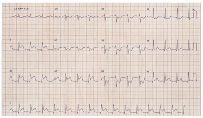
A clopidogrel 300 mg, enoxaparina intravenosa e, após, subcutânea, bem como trombolítico fibrino específico intravenoso.
B ticagrelor 180 mg, enoxaparina intravenosa e, após, subcutânea, bem como trombolítico fibrino específico intravenoso.
C isordil sublingual 5 mg, morfina intravenosa, clopidogrel 300 mg, enoxaparina subcutânea e trombolítico fibrino específico intravenoso.
D isordil sublingual 5 mg, morfina intravenosa, ticagrelor 180 mg, enoxaparina subcutânea e trombolítico fibrino específico intravenoso.
Questão 10 · Tratamento f armacológico do IAMCSST · Cardiologia · 4000173530Um paciente de 50 anos foi internado com infarto do miocárdio de parede anterior (com elevação de segmento ST). Foi submetido à angioplastia com implante de stent farmacológico na artéria descendente anterior. No 10º dia de internamento, realizou ecocardiograma que identi cou fração de ejeção de 50% e estava em programação de alta hospitalar. Qual das opções abaixo NÃO deverá constar de sua prescrição de alta?
A Estatina de alta potência (independente do nível sérico de colesterol)
B Ácido acetil salicílico (com previsão de uso por tempo indeterminado)
C Ticagrelor (com previsão de uso por um ano)
D Captopril (com previsão de uso por tempo indeterminado)
E Nifedipina (se desenvolver dor anginosa refratária a betabloqueador e nitrato)
Questão 11 · Insuf iciência mitral aguda · Taquiarritmias ventriculares · 4000169580Sobre as complicações no infarto agudo do miocárdio, analisar os itens abaixo: I. Ritmo idioventricular acelerado (60 a 100 batidas por minuto) com frequência ocorre nas primeiras 12 horas e não é um fator de risco para arritmias ventrículares mais graves. II. Ruptura de músculo papilar com insu ciência mitral aguda severa é uma complicação mecânica que apresenta boa resposta ao tratamento clínico, recuperando a função valvar sem necessidade de cirurgia, na maioria dos casos. III. A brilação ventricular é mais frequente nas primeiras horas do infarto, com redução da incidência para 6% dos casos na fase tardia do infarto. Está(ão) CORRETO(S):
A Somente o item I.
B Somente os itens I e II.
C Somente os itens I e III.
D Somente os itens II e III.
Questão 12 · Intervenção coronariana percutânea no tratamento do IAMCSST · 4000168338Paciente feminina, de 69 anos, procurou a Emergência por dor precordial iniciada há 5 horas. Relatou história de diabetes melito e hipertensão arterial, ambos com controle irregular. Ao exame físico, a pressão arterial era de 166/72 mmHg, a frequência cardíaca de 108 bpm, Killip II, sem outras alterações significativas. O eletrocardiograma (ECG) realizado por ocasião da admissão está reproduzido abaixo. O hospital com plantão de hemodinâmica pode ser acessado em aproximadamente 70 minutos. A estratégia com melhor expectativa de benefício para a paciente é
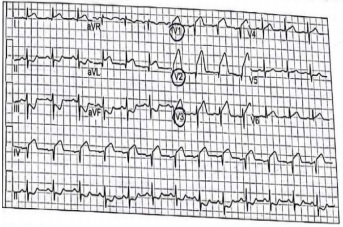
A administrar estreptoquinase imediatamente e programar a transferência para outro hospital somente para terapia de resgate, se houver falha na reperfusão farmacológica.
B administrar dupla antiagregação plaquetária e nitroglicerina intravenosa e repetir o ECG em 30 minutos.
C administrar alteplase intravenosa associada a heparina não fracionada por 24 horas e programar a transferência para hospital com serviço de hemodinâmica em 6-24 horas.
D transferir a paciente para hospital com serviço de hemodinâmica para realização de angioplastia primária.
Questão 13 · Intervenção coronariana percutânea no tratamento do IAMCSST · Cardiologia · 4000167113Uma mulher de 55 anos está internada em um hospital, com diagnóstico de Infarto Agudo do Miocárdio (IAM) com supradesnivelamento do segmento ST no eletrocardiograma (ECG), e precisa ser transferida para outro serviço para a realização de estudo hemodinâmico e provável intervenção percutânea de urgência. Diante do exposto, assinale a alternativa correta.
A As informações sobre a paciente são sigilosas e só podem ser transmitidas para outro médico através de mandado judicial.
B A falta do serviço de hemodinâmica no hospital atual é de responsabilidade do diretor técnico, que deve ser acionado para resolução do caso.
C É obrigação do médico assistente informar, de forma clara e concisa, todos os dados necessários para que exista uma transferência de cuidados adequada.
D O transporte da paciente até o serviço de referência é de responsabilidade do médico que vai receber a paciente.
E O tempo decorrido durante o transporte tem pouca ou nenhuma influência no desfecho do caso.
Questão 14 · Inf arto de ventriculo direito · Cardiologia · 4000166182Na ocorrência de infarto agudo do miocárdio de parede inferior, a coexistência com infarto de ventrículo direito indica que se deve observar atentamente alguns aspectos para que seja realizada a abordagem. Considerando essa informação, assinale a alternativa correta.
A A evolução complicada dos pacientes infartados na parede inferior é identificada na associação do infarto do ventrículo direito, impactando no prognóstico dos pacientes quando não adequadamente reperfundidos.
B A perspectiva de complicações do infarto inferior é diretamente proporcional ao infarto do ventrículo direito não documentado.
C A relação entre o infarto agudo do miocárdio inferior e o infarto agudo do miocárdio do ventrículo direito somente implica na prática clínica em caso de identificação da tríade clínica clássica dessa ocorrência.
D Deve-se observar, no curso do infarto agudo do miocárdio inferior, a presença de supradesnivelamento do seguimento ST em V4R para o diagnóstico definitivo de infarto de ventrículo direito, independentemente do tempo de dor torácica.
E A coexistência de infarto agudo do miocárdio inferior e infarto de ventrículo direito somente determina a infusão de volume rápido na terapia emergencial se confirmar a presença do supradesnivelamento de seguimento ST em V4R, independentemente da apresentação clínica do paciente .
Questão 15 · Tratamento f armacológico do IAMCSST · 4000146423Em relação ao infarto agudo do miocárdio com supradesnivelamento do segmento ST, assinale a alternativa correta.
A Lidocaína ou amiodarona intravenosa devem ser administradas nos pacientes com infarto agudo do miocárdio que apresentam extrassístoles ventriculares após a terapia de reperfusão.
B No infarto do miocárdio com supra de ST, o risco de reinfarto é maior que no infarto sem supra de ST.
C A CKMB é mais sensível e menos específica que a troponina no diagnóstico de infarto não transmural.
D Os inibidores da enzima de conversão de angiotensina devem ser administrados nas primeiras 24 horas de infarto agudo do miocárdio com disfunção ventricular.
E Angioplastia primária é contraindicada nos pacientes com supradesnivelamento do segmento ST e enzimas normais na admissão hospitalar.
Questão 16 · Diagnóstico eletrocardiograf ico do IAMCSST · 4000146070Os critérios para diagnóstico de IAM são aumento e/ou queda de marcadores de necrose miocárdica, preferencialmente a troponina, com pelo menos um valor acima do percentil 99 do método, indique o item correto:
A Associado a pelo menos duas das seguintes alterações: sintomas sugestivos de isquemia, novas alterações do segmento ST, onda T ou Bloqueio de Ramo Esquerdo (BRE novo, aparecimento de ondas Q patológicas no ECG, exame de imagem com perda de miocárdio viável ou nova alteração na contratilidade segmentar e identificação de trombo intracoronário na angiografia ou em autópsia.
B Associado a pelo menos uma das seguintes alterações: sintomas sugestivos de isquemia, novas alterações do segmento ST, onda T ou Bloqueio de Ramo Esquerdo (BRE antigo, aparecimento de ondas Q patológicas no ECG, exame de imagem com perda de miocárdio viável ou nova alteração na contratilidade segmentar e identificação de trombo intracoronário na angiografia ou em autópsia.
C Associado a pelo menos uma das seguintes alterações: sintomas sugestivos de isquemia, novas alterações do segmento ST, onda T ou Bloqueio de Ramo Esquerdo (BRE novo, aparecimento de ondas Q patológicas no ECG, exame de imagem com perda de miocárdio viável ou nova alteração na contratilidade segmentar e identificação de trombo intracoronário na angiografia ou em autópsia.
D Associado a pelo menos uma das seguintes alterações: sintomas sugestivos de isquemia, novas alterações do segmento ST, onda T ou Bloqueio de Ramo Esquerdo (BRE novo, aparecimento de ondas Q patológicas no ECG, exame de imagem com perda de miocárdio viável ou nova alteração na contratilidade segmentar e identificação de trombo intracoronário na angiografia exceto em autópsia.
Questão 17 · Diagnóstico eletrocardiograf ico do IAMCSST · 4000146065O critério eletrocardiográfico para IAMCST inclui elevação do segmento ST em duas derivações contíguas, sendo correto de acordo com Sociedade Brasileira de Cardiologia, a alternativa
A Acima de 1,5 mm em mulheres, acima de 2 mm em homens ≥ 60 anos e acima de 2,5mm em homens < 40 anos nas derivações V2-V3 e/ou acima de 1 mm nas demais derivações.
B Acima de 1,5 mm em mulheres, acima de 2 mm em homens ≥ 40 anos e acima de 2,5mm em homens < 40 anos nas derivações V2-V3 e/ou acima de 1 mm nas demais derivações.
C Acima de 1,5 mm em mulheres, acima de 2 mm em homens ≥ 40 anos e acima de 2,5mm em homens < 40 anos nas derivações V2-V3 e/ou acima de 2 mm nas demais derivações.
D Acima de 2,5 mm em mulheres, acima de 2 mm em homens ≥ 40 anos e acima de 2,5mm em homens < 40 anos nas derivações V2-V3 e/ou acima de 1 mm nas demais derivações.
Questão 18 · Tratamento f armacológico do IAMCSST · 4000145802Um homem de 52 anos de idade, tabagista, procura o prontosocorro com dor torácica após o uso de cocaína, há cerca de 3 horas. Ao exame físico, encontra-se ansioso, taquipneico, com frequência cardíaca de 110 bat/min, pulso regular, PA = 140X90 mmHg, com ausculta cardíaca e pulmonar normais. Uma droga que deve ser evitada nessa terapia inicial é:
A aspirina
B propranolol
C nitroglicerina
D benzodiazepínico
Questão 19 · Contraindicações ao uso dos f ibrinolíticos · 4000145800Paciente com 43 anos de idade chega ao pronto-socorro relatando desconforto torácico típico com cerca de 3 horas de evolução, desencadeado por um esforço físico. O eletrocardiograma apresenta elevação do segmento ST de v1 a v6. Trata-se de paciente candidato a uso de trombolítico, sendo importante observar que NÃO constitui contraindicação absoluta à utilização dessa classe de medicamentos:
A AVC hemorrágico prévio
B AVC isquêmico dentro de 3 meses, exceto AVC isquêmico agudo
C neoplasia intracraniana ou da medula espinhal ou malformação arteriovenosa
D hipertensão grave não controlada por história ou na admissão (> 180/110 mmH)
Questão 20 · Fibrinólise no tratamento do IAMCSST · Revascularização miocárdica · Indicações de cateterismo · 4000142364Um paciente de 54 anos de idade, com história de hipertensão arterial e dislipidemia, deu entrada no pronto-socorro com queixa de dor torácica retroesternal irradiada para a mandíbula há uma hora. Sinais vitais na entrada: pressão arterial de 140 x 90 mmHg; frequência cardíaca de 92; saturação de O2 de 94%; e frequência respiratória de 20. Exame cardiopulmonar: ritmo cardíaco regular, sem sopros; e presença de B3 e B4. Murmúrio vesicular audível bilateralmente, com estertores nos em ambas as bases. Eletrocardiograma revelou infradesnivelamento de ST. Com base nesse caso hipotético, julgue o item. A trombólise é contraindicada para o paciente.
A Certo.
B Errado.
Questão 21 · Tratamento f armacológico do IAMCSST · 4000133693Homem de 55 anos é internado com quadro de infarto agudo do miocárdio de parede anterior, Killip II. As opções terapêuticas que podem reduzir o risco de mortalidade nesse tipo de quadro são:
A inibidor da ECA, angioplastia, nitrato e bloqueador de canal de cálcio.
B inibidor da ECA, trombolítico, bloqueador de canal de cálcio e AAS .
C betabloqueador, trombolítico, vastatina e nitrato .
D betabloqueador, angioplastia, vastatina e AAS .
Questão 22 · Diagnóstico eletrocardiograf ico da parede do inf arto · Cardiologia · 4000131168Um paciente de 35 anos de idade, com miocardiopatia isquêmica dilatada com fração de ejeção prévia de 30%, encaminha- se à emergência com dor torácica em aperto há sete horas, dispneia importante e sudorese. Foram solicitados exames laboratoriais que demonstraram hemograma normal, função renal e eletrólitos normais. Seu peptídeo natriurético cerebral (BNP) era de 300 pg/mL (valor de referência até 150 pg/dL). Solicitou-se, então, o eletrocardiograma representado na figura a seguir. Fonte ECG: John Hamptom 150 ECGs problems Considerando esse caso clínico, a figura apresentada e os conhecimentos médicos correlatos, julgue o item a seguir. O paciente apresenta-se com infarto agudo do miocárdio anterior.

A Certo.
B Errado.
Questão 23 · Inf arto de ventriculo direito · 4000130959(MODIFICADA) Homem, 78 anos, procura atendimento em Unidade Básica de Saúde com queixa de náuseas, vômitos e dor torácica de forte intensidade irradiada para membro superior esquerdo, iniciada há 2 horas. É hipertenso, diabético e ex- tabagista. Ao exame físico: regular estado geral, corado, PA = 80 x 50 mmHg, FR = 20 ipm, estase jugular bilateral ACV: bulhas rítmicas normofonéticas sem sopros. AR: murmúrio vesicular presente e simétrico, sem ruídos adventícios. Ao analisar o caso exposto, o cardiologista do plantão solicita que seja rodado um novo eletrocardiograma com derivações adicionais. Confirmando-se a provável hipótese do médico cardiologista, o tratamento a ser instituído será:
A Metoprolol intravenoso
B Hidratação vigorosa com SF 0,9%
C Nitrato sublingual
D Bloqueador de canal de cálcio
E Morfina intravenosa
Questão 24 · Diagnóstico eletrocardiograf ico da parede do inf arto · 4000130958Homem, 78 anos, procura atendimento em Unidade Básica de Saúde com queixa de náuseas, vômitos e dor torácica de forte intensidade irradiada para membro superior esquerdo, iniciada há 2 horas. É hipertenso, diabético e ex-tabagista. Ao exame físico: regular estado geral, corado, PA = 80 x 50 mmHg, FR = 20 ipm, estase jugular bilateral ACV: bulhas rítmicas normofonéticas sem sopros. AR: murmúrio vesicular presente e simétrico, sem ruídos adventícios. O eletrocardiograma está representado a seguir: Qual é o diagnóstico?
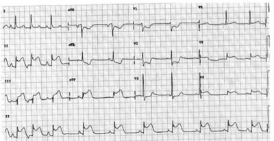
A IAM sem supra de ST
B IAM com supra de ST anterior extenso
C IAM com supra de ST ínfero-lateral (dorsal)
D IAM com supra de ST latero-dorsal
E IAM com supra de ST inferior.
Questão 25 · Noções de ECG · Cardiologia · 4000129353Em relação à investigação complementar das cardiopatias, assinale a alternativa INCORRETA.
A Baixa voltagem do QRS e alternância elétrica sugerem derrame pericárdico.
B Cintilografia com zona de hipoperfusão em repouso e no esforço indica necrose.
C A presença de onda U no ECG é um sinal de isquemia miocárdica.
D Ecocardiograma transtorácico na Estenose Aórtica é o exame de escolha para o acompanhamento.
Questão 26 · Clopidogrel · 4000127739(ADAPTADA) Mulher de 65 anos, diabética, é avaliada no Centro de Dor Torácica do HB com queixa de dor precordial em queimação, há 1 hora, de moderada intensidade, irradiada para o membro superior esquerdo e desencadeada ao repouso. Ao exame físico apresenta PA: 85 x 55 mmHg, FC: 105 BPM. O ECG mostrou supradesnível do segmento ST de 1,5 mm nas derivações V2-V3 e 1 mm em V4. Quanto ao tratamento e de acordo com a diretrizes da Sociedade Brasileira de Cardiologia, assinale a resposta incorreta.
A O ticagrelor é efetivo na redução de eventos em pacientes tratados na sala de emergência na dose de ataque de 180 mg seguida de 90 mg, duas vezes ao dia submetidos a ICP primária.
B Uma dose de ataque de 600 mg de clopidogrel deve ser indicada para pacientes com menos de 75 anos não submetidos à angioplastia primária.
C O estudo ISIS-2 (Second International Study of Infarct Survival), mostrou que o ácido acetil salicílico reduz a mortalidade em 23%, isoladamente, quase tanto quanto a estreptoquinase.
D Quando indicado em pacientes estáveis, o betabloqueador oral deve ter sua dose titulada para um alvo em torno de 60 batimentos por minutos.
Questão 27 · Betabloqueadores · 4000127734Em relação à paciente relatada na questão anterior responda. Quanto ao tratamento e de acordo com as diretrizes da Sociedade Brasileira de Cardiologia, assinale a resposta incorreta. Enunciado da questão anterior: Mulher de 65 anos, diabética, é avaliada no Centro de Dor Torácica do HB com queixa de dor precordial em queimação, há 1 hora, de moderada intensidade, irradiada para o membro superior esquerdo e desencadeada ao repouso. Ao exame físico apresenta PA: 85 x 55 mmHg, FC: 105 BPM. O ECG mostrou supradesnível do segmento ST de 1,5 mm nas derivações V2-V3 e 1 mm em V4.
A O ácido acetil salicílico (AAS) é o único antin amato
B Nitratos estão contraindicados na presença de hipotensão arterial, uso prévio de sildenafil nas últimas 24 horas ou tadalafila nas últimas 48 horas.
C Pacientes com contraindicação para o uso precoce dos betabloqueadores devem ser excluídos para uso dessa terapia na prevenção secundária.
D A utilização de betabloqueador endovenoso deve ser feita com critério após resultado do estudo COMMIT que mostrou um subgrupo de pacientes que evoluiu com choque cardiogênico após a administração de betabloqueador endovenoso.
Questão 28 · Introdução · 4000127733Mulher de 65 anos, diabética, é avaliada no Centro de Dor Torácica do HB com queixa de dor precordial em queimação, há 1 hora, de moderada intensidade, irradiada para o membro superior esquerdo e desencadeada ao repouso. Ao exame físico apresenta PA: 85 x 55 mmHg, FC: 105 BPM. O ECG mostrou supradesnível do segmento ST de 1,5 mm nas derivações V2-V3 e 1 mm em V4. De acordo com a Quarta Definição Universal de IAM, assinale a resposta incorreta.
A O diagnóstico de infarto agudo do miocárdio (IAM) com supradesnível do segmento ST (IAMCST) necessita da presença de supradesnível do ST ≥ 2,0 mm quando ocorre nas derivações V2-V3 para mulheres.
B O critério eletrocardiográfico geral para o diagnóstico de IAM com supra nas derivações V2 e V3 varia de acordo com o sexo e a idade e deve estar presente em duas derivações contíguas.
C Neste caso, o diagnóstico inicial de IAM com supradesnível do segmento ST não necessita aguardar o resultado das troponinas para instituição do tratamento.
D No caso de homens o diagnóstico de IAMCST tem como critério a presença de supradesnível do ST ≥ 2,0 mm, nas derivações V2-V3, para homens > 40 anos e ≥ 2,5 mm para homens < 40 anos.
Questão 29 · Betabloqueadores · 4000127483Renato, 64 anos, portador de diabetes e hipertensão, em uso de Metformina 1g a cada 12 horas e atenolol 25mg ao dia. Foi internado recentemente por quadro de infarto agudo do miocárdio com supra de ST sendo tratado com implante de stent farmacológico em artéria descendente anterior. Seu exame físico no dia da alta revela uma pressão arterial de 140x92 mmHg, FC: 88bpm, FR: 18ipm, sem alterações. Seus exames laboratoriais revelavam uma Hemoglobina Glicada de 7,9%, LDL de 194 mg/dL, HDL 35 mg/dL, triglicerídeos 150mg/dL e o ecocardiograma demonstra uma contratilidade normal, com fração de ejeção preservada. Sobre o caso clínico apresentado, assinale certo ou errado para a afirmação a seguir. Esse paciente deve receber uma terapia com beta bloqueadores no momento da alta, podendo ser mantido o uso do Atenolol.
A Certo.
B Errado.
Questão 30 · Antiagregantes plaquetários · 4000127481Renato, 64 anos, portador de diabetes e hipertensão, em uso de Metformina 1g a cada 12 horas e atenolol 25mg ao dia. Foi internado recentemente por quadro de infarto agudo do miocárdio com supra de ST sendo tratado com implante de stent farmacológico em artéria descendente anterior. Seu exame físico no dia da alta revela uma pressão arterial de 140x92 mmHg, FC: 88bpm, FR: 18ipm, sem alterações. Seus exames laboratoriais revelavam uma Hemoglobina Glicada de 7,9%, LDL de 194 mg/dL, HDL 35 mg/dL, triglicerídeos 150mg/dL e o ecocardiograma demonstra uma contratilidade normal, com fração de ejeção preservada. Sobre o caso clínico apresentado, assinale certo ou errado para a afirmação a seguir. A dupla antiagregação plaquetária deve ser realizada com AAS e Clopidogrel e deve durar 1 mês, seguido por manutenção de AAS por 1 ano.
A Certo.
B Errado.
Questão 31 · Diagnóstico eletrocardiograf ico da parede do inf arto · Eletrocardiograma · 4000123479Paciente de 60 anos, portador de hipertensão arterial sistêmica não tratada, foi trazido à Emergência por pressão arterial elevada e dor retroesternal há mais de 30 minutos, acompanhada de sudorese e mal-estar. O eletrocardiograma realizado (imagem abaixo) mostra
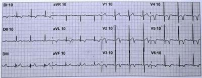
A sobrecarga do ventrículo esquerdo, indicando a necessidade imediata de melhor controle dos níveis pressóricos.
B aumento da amplitude dos complexos QRS em parede lateral e alteração da repolarização ventricular em paredes lateral alta, anterosseptal e lateral, sugerindo sobrecarga do ventrículo esquerdo, acompanhada de zona inativa lateral alta, pela presença de ondas Q patológicas, indicando a necessidade de melhor controle ambulatorial dos níveis pressóricos.
C ondas T bifásicas em V2 e V3 e ondas T simétricas e invertidas em V4, V5 e V6 sugestivas de síndrome coronariana aguda, indicando manejo mais agressivo do paciente, por tratar-se de provável lesão proximal grave na coronária descendente anterior esquerda (padrão de Wellens).
D ondas T bifásicas em V2 e V3 e ondas T simétricas e invertidas em V4, V5 e V6 sugestivas de sobrecarga ventricular esquerda de longa data; os achados não indicam síndrome coronariana aguda, podendo o paciente ser liberado para casa.
E apenas ondas Q patológicas antigas em parede lateral alta, sem necessidade de qualquer manejo de urgência.
Questão 32 · Insuf iciência mitral aguda · Comunicação interventricular · 4000120222Ruptura da parede livre do ventrículo esquerdo As complicações do infarto agudo do miocárdio que podem necessitar de intervenção cirúrgica de urgência ou emergência são:
A insuficiência valvar aórtica aguda, comunicação interventricular e aneurisma deventrículo esquerdo.
B trombose em átrio esquerdo, dissecção de aorta e insuficiência aguda de valvapulmonar.
C aneurisma de ventrículo esquerdo, ruptura cardíaca e insuficiência aguda da valvapulmonar.
D ruptura cardíaca, comunicação interventricular e insuficiência mitral aguda.
Questão 33 · Diagnóstico eletrocardiograf ico da parede do inf arto · Bradiarritmias e bloqueios atrioventriculares · 4000120175Mulher de 80 anos apresenta dor torácica retroesternal em peso, contínua, de forte intensidade, sem fatores de melhora, acompanhada de fraqueza e turvação visual há 6 horas. AP: DM, AVC há 10 anos. Exame físico: REG, FR 14 irpm, FC 40 bpm, PA 80/60 mmHg, oximetria 95% em ar ambiente, bulhas rítmicas sem sopros, ausculta respiratória com som claro pulmonar. ECG da admissão (imagem a seguir). Assinale a alternativa correta.
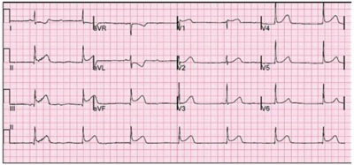
A O distúrbio do ritmo está relacionado à provável acometimento intranodal, associado a distúrbio transitório (2-3 dias) e que raramente necessita de marcapasso permanente.
B A administração definitrato, considerando a provável etiologia vasoespástica, pode reduzir a área de miocárdio atordoado associado, contribuindo para reduzir a remodelação adversa a longo prazo.
C A administração de prasugrel associado à rivaroxabana na admissão do paciente,considerando o alto risco de sangramento, é mais recomendada do que o tratamento com clopidogrel e enoxaparina.
D A presença de complicações relacionadas à síndrome coronariana aguda, dentre elas,a insuficiência mitral aguda por disfunção da musculatura papilar, comumente, está relacionada à presença de sopro sistólico importante no foco mitral.
Questão 34 · Diagnóstico eletrocardiograf ico da parede do inf arto · 4000114857Homem, 45 anos, professor universitário, maratonista competidor frequente e sem fatores de risco para doença arterial coronária, muito estressado no trabalho, perdeu a esposa há poucos dias em acidente automobilístico. Refere dor intensa (8/10) retroesternal, sem irradiação, que persiste há duas horas. Recebeu de vizinho por via sublingual 1 comprimido de dinitrato de isossorbida há cerca de uma hora. Exame físico: FC = 50 bpm, rítmico, PA = 80/60 mmHg. Precórdio sem frêmitos ou sopros e sem estertores crepitantes pulmonares. ECG da entrada no hospital (ver figura). Qual é o diagnóstico mais provável ?

A Infarto agudo do miocárdio com oclusão da coronária direita.
B Síndrome de ""takotsubo"" (""coração partido"") com coronárias normais.
C ""Coração de atleta"" com repolarização ventricular precoce.
D Pericardite aguda com derrame pericárdico.
Questão 35 · Antiagregantes plaquetários · Heparina de baixo peso molecular · 4000112757Homem de 72 anos de idade refere dor precordial em aperto, sudorese e náuseas há 4 horas. Exame físico: PA: 165 x 105 mmHg (ambos os membros superiores), FC: 65 bpm, FR: 15 ipm e SatO₂: 95%; tórax: estertores bilaterais em bases pulmonares; ausculta cardíaca: sem alteração relevante; abdome normal; pulsos carotídeos, radiais e femorais palpáveis e simétricos; não há edema de membros inferiores. Radiogra a de tórax: normal. O ECG realizado é mostrado a seguir (não há alteração de segmento ST em derivações periféricas). Foram administrados 300 mg oral de aspirina. Admitindo-se que não há contraindicações a antiplaquetários, anticoagulantes ou fibrinolíticos, nesse momento, o tratamento correto é:
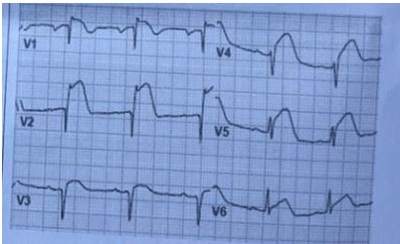
A clopidogrel, heparina não fracionada intravenosa e estreptoquinase.
B clopidogrel, enoxaparina subcutânea e tenecteplase.
C prasugrel, metoprolol intravenoso e alteplase (t-PA).
D ticagrelor, fraxiparina subcutânea, morfina intravenosa e reteplase (rt-PA).
E ticagrelor; fondaparinux subcutânea e fibrinolítico.
Questão 36 · Diagnóstico eletrocardiograf ico do IAMCSST · 4000109503Homem de 68 anos de idade, fumante 30 maços-ano, tem doença renal crônica em programação de diálise. Chega em Pronto-Socorro com história de mal-estar e náuseas há 40 minutos. Apresenta PA 150x100 mmHg, sem outras alterações do exame clínico. Feito o eletrocardiograma a seguir. Qual é o diagnóstico?

A Infarto agudo do miocárdio.
B Hipercalemia.
C Hipercalcemia.
D Bloqueio de ramo esquerdo.
Questão 37 · Tratamento f armacológico do IAMCSST · Cardiologia · 4000075453Um paciente de 48 anos, portador de hipertensão e diabetes apresenta-se no pronto atendimento com queixa de dor torácica intensa com início há 5 horas. Ele refere que a dor tem características opressiva com irradiação para ambos os membros, que piora ao esforço mínimo e tem discreto alívio ao repouso. O eletrocardiograma realizado encontra-se abaixo: Sobre a terapia medicamentosa para o paciente anterior, assinale a alternativa CORRETA:
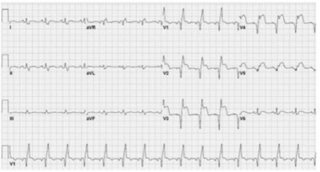
A Uma das drogas que apresentam grande impacto na mortalidade e que deve ser aplicada imediatamente para esse paciente é o nitrato, sendo a via de escolha a sublingual.
B A terapia antiagregante deve ser iniciada imediatamente, sendo uma opção a associação de AAS e Ticagrelor.
C Os Bloqueadores do receptor de angiotensina apresentam claro benefício nas primeiras 6 horas, devendo ser iniciado imeditamente.
D Como o paciente é considerado de alto risco, deve receber imediatamente um inibidor da glicoproteína 2b-3a.
E Devido a instabilidade elétrica apresentada no eletrocardiograma, ele deve receber infusão de amiodarona, para prevenção de arritmias malignas.
Questão 38 · Intervenção coronariana percutânea no tratamento do IAMCSST · Cardiologia · 4000075430Um paciente de 48 anos, portador de hipertensão e diabetes apresenta-se no pronto atendimento com queixa de dor torácica intensa com início há 5 horas. Ele refere que a dor tem características opressiva com irradiação para ambos os membros, que piora ao esforço mínimo e tem discreto alívio ao repouso. O eletrocardiograma realizado encontra-se abaixo: Qual a melhor conduta imediata?
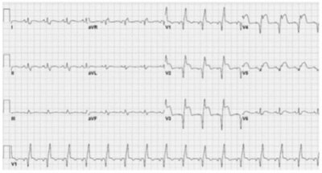
A Solicitar marcadores de necrose miocárdica, caso elevados encaminhar para cateterismo cardíaco.
B Encaminhar imediatamente para terapia de reperfusão, sendo preferível a angioplastia primária, caso disponível.
C Como já se passaram mais de 4 horas e meia do início da dor, não há mais benefício no uso de terapia de reperfusão primária, sendo indicado o tratamento clínico.
D Existe indicação para realização de prova funcional, preferencialmente cintilografia do miocárdio nas próximas 24 horas.
E Como o ECG apresenta bloqueio de ramo esquerdo, devemos solicitar se o paciente possui algum exame antigo para então definir a conduta.
Questão 39 · Distúrbios do ritmo · Diagnóstico do IAMCSST · Cuidados pósressuscitação · 4000075078Homem, 68 anos, hipertenso, tabagista, comparece à emergência com dor torácica de forte intensidade, irradiada para membro superior esquerdo com início há uma hora. Antes de realizar o eletrocardiograma, apresentou parada cardiorrespiratória. Iniciadas as manobras de reanimação cardiopulmonar com compressões torácicas, ventilação por bolsa- valva-máscara e epinefrina, com retorno da circulação espontânea após 7 minutos. O ECG pós-PCR é mostrado a seguir. A conduta mais adequada para o paciente, neste momento, sabendo-se que o serviço de hemodinâmica mais próximo ca a quatro horas de distância, é:
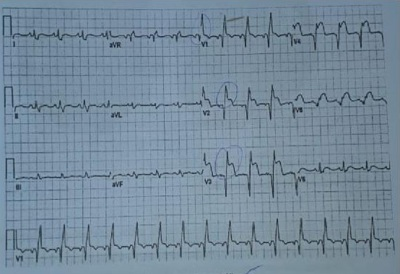
A transferência para hospital terciário sem trombólise
B trombólise e transferência imediata para hospital terciário
C amiodarona, dupla antiagregação plaquetária e anticoagulação
D não administrar terapia antitrombótica para viabilizar hipotermia
Revisar: possível letra faltando em enunciado
Questão 40 · Fibrinólise no tratamento do IAMCSST · 4000072731Um paciente do sexo masculino, 68 anos de idade, sem comorbidades conhecidas, vem ao INTO para revisão, 10 dias após ter sido submetido à uma osteossíntese de rádio distal. Durante o atendimento ele refere forte dor precordial opressiva, com irradiação para a mandíbula. O médico plantonista solicita um eletrocardiograma (abaixo). Sabendo que não há possibilidade de transferência hospitalar, como você interpreta a indicação de fibrinolíticos neste caso?

A São indicados, apesar da cirurgia recente.
B São contraindicação absoluta, pois o paciente foi submetido à cirurgia recente.
C Não de pode definir sobre seu uso até que se tenha o resultado da dosagem de troponina.
D São contraindicados pois não haverá benefício neste tipo de infarto.
E São contraindicados pois o paciente é idoso.
Questão 41 · Introdução · 4000049988Entre os fatores abaixo relacionados, qual é o de maior risco para infarto do miocárdio?
A Diabetes
B Obesidade
C Tabagismo
D Hipertensão
E Dislipidemia
Questão 42 · Inf arto agudo do miocárdio associado ao uso de drogas ilícitas · Cardiologia · 4000046519Um paciente de 35 anos, previamente hipertenso, estava em um festival de rock e fumou crack pela primeira vez. Cerca de 60 minutos depois, começou a sentir dor torácica de forte intensidade, apresentando palidez, palpitações e sudorese. Assinale a alternativa CORRETA em relação ao caso descrito.
A Caso o eletrocardiograma seja normal, deve-se solicitar tomografia de tórax com contraste.
B A doença coronariana relacionada ao uso de cocaína e seus derivados é observada após uso crônico; então, é pouco provável que esse paciente esteja com síndrome coronariana aguda.
C A lesão cardíaca é dependente de vasoconstricção coronária. O tratamento se baseia no uso de vasodilatadores como nitratos e bloqueadores dos canais de cálcio, não havendo necessidade de antiagregantes.
D Se a frequência cardíaca de admissão for maior que 120 bpm, deve ser feita infusão de metoprolol.
E Se houver elevação do segmento ST no eletrocardiograma e a dor não ceder após seis horas de terapia vasodilatadora, o paciente deverá ser submetido à angiografia coronária.
Questão 43 · Diagnóstico eletrocardiograf ico do IAMCSST · 4000039931Paciente de 62 anos admitido no pronto socorro com história de há 3 horas evoluindo com dor torácica de forte intensidade seguida de torpor. Ao exame físico: Mal estado geral com Glasgow 12 e extremidades frias e pegajosas. Frequência cardíaca de 36 btm/min. PA: 70x30mmHg. Ausculta pulmonar: MV+ bilateralmente, com crepitações bibasais com frequência respiratória de 25iRPM. Abdome: inocente. ECG realizado na urgência mostra o seguinte traçado. Esse ECG indica um:
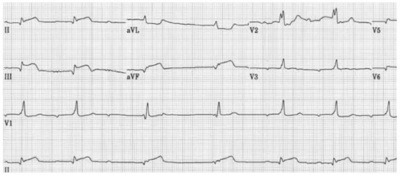
A infarto agudo do miocárdio, com supra de ST, com indicação de cateterismo de urgência.
B bloqueio átrio ventricular total, com indicação de implantação de marcapasso transcutânea.
C infarto agudo do miocárdio, sem supra de ST, com indicação de dupla agregação e CATE eletivo.
D bloqueio átrio ventricular, MOBITZ II, secundário a infarto agudo do miocárdio, indicado fazer atropina.
Questão 44 · Intervenção coronariana percutânea de resgate · 4000036328Após a administração de brinolítico no infarto agudo do miocárdio com supradesnivelamento do segmento ST, indica-se a intervenção coronariana percutânea de resgate na seguinte situação:
A Quando há aumento de troponina após seis horas de administração do fibrinolítico.
B Sempre e imediatamente após o término da fibrinólise.
C Manutenção da dor torácica e / ou se não houver redução de pelo menos 50% do supradesnivelamento do ST no eletrocardiograma.
D Se o paciente apresentar ritmo idioventricular acelerado ao eletrocardiograma.
Questão 45 · Intervenção coronariana percutânea primária · Cardiologia · 4000029906Um paciente de 80 anos dá entrada no pronto-socorro com forte dor no peito há 30 minutos, associada a sudorese. À admissão, observam-se um ritmo regular, FC = 80 BPM, PA 80x55 mmHg e Sat. O₂ = 95%. O ECG mostrou supradesnivelamento do segmento ST de V1 a V4. Nesse caso, a conduta imediata é:
A dosar enzimas cardíacas.
B avaliar função renal.
C iniciar noradrenalina.
D realizar revascularização percutânea.
Questão 46 · Cardiologia · Diagnóstico eletrocardiograf ico do IAMCSST · 4000130292Homem, 63a, é admitido com história de dor precordial há 2 horas. Antecedentes Pessoais: hipertensão arterial sistêmica em uso de amlopidina e enalapril há 3 anos e tabagismo 30 maços/ano. À admissão: PA= 156x98mmHg. Eletrocardiograma: Iniciado tratamento com aspirina, clopidogrel, nitroglicerina e captopril. Paciente evolui com melhora dos sintomas. Após 2 horas sem queixas, volta a ter dor precordial. Eletrocardiograma: O MECANISMO FISIOPATOLÓGICO E A ARTÉRIA ACOMETIDA SÃO:
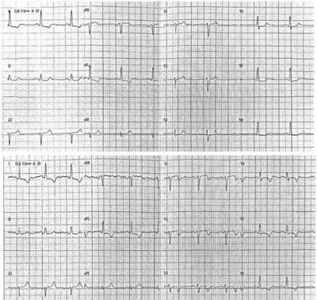
A Vasoespasmo; artéria circunflexa dominante.
B Isquemia; artéria coronária direita.
C Vasoespasmo; artéria descendente posterior.
D Isquemia; artéria descendente anterior.
Questão 47 · Diagnóstico eletrocardiograf ico do IAMCSST · 4000130266Homem, 68a, é admitido em Unidade de Emergência com dor precordial há 3 horas. Antecedentes pessoais: hipertensão arterial sistêmica e diabetes mellitus. Após administração de ácido acetilsalicílico, clopidogrel e nitroglicerina, evoluiu com hipotensão. A ausculta pulmonar não mostrou alterações. Eletrocardiograma: ONDE DEVE SER COLOCADO O ELETRODO DO ELETROCARDIOGRAMA PARA DETERMINAR A REGIÃO CARDÍACA ACOMETIDA QUE JUSTIFICA O QUADRO CLÍNICO DO PACIENTE?
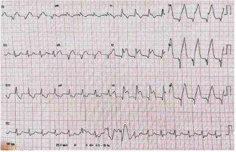
A Borda esternal direita, no segundo espaço intercostal.
B Linha hemiclavicular direita, no quinto espaço intercostal.
C Linha axilar posterior esquerda, no quinto espaço intercostal.
D Linha paravertebral esquerda, no quinto espaço intercostal.
Questão 48 · Regimes de tratamento e comparação entre os f ibrinolíticos · 4000121429Um paciente de 58 anos de idade, tabagista, deu entrada no pronto-socorro com precordial com irradiação para o dorso de região cervical de início há trinta minutos. Ao exame físico, apresentava sopro sistólico em foco mitral +2/6, estertores crepitantes em 1/3 inferiores de ambos os hemitórax, pressão arterial de 110 x 74 mmHg em ambos os membros superiores, FC de 68 bpm e SO₂ de 94%. O hospital local não tinha serviço de hemodinâmica disponível, sendo o tempo de transporte até o centro de referência equivalente a cerca de três horas. Realizou também o eletrocardiograma apresentado a seguir. Considerando essa situação hipotética, assinale a alternativa correta.
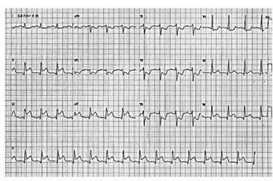
A A trombólise com fibrino específico deve ser instituída imediatamente, visto que, quando comparada à com não fibrino específico, promove maior redução de mortalidade.
B O paciente deve receber aspirina, prasugrel e anticoagulação com heparina de baixo peso molecular, em conjunto com trombólise.
C O paciente deve receber aspirina, ticagrelor e anticoagulação com heparina não fracionada, em conjunto com trombólise.
D O paciente deve ser encaminhado para serviço de hemodinâmica o mais rápido possível, sendo a trombólise indicada apenas na indisponibilidade do transporte.
E O paciente é classificado como infarto com supra de ST, Killip III, portanto apresenta contraindicação absoluta à trombólise.
Questão 49 · Diagnóstico eletrocardiograf ico da parede do inf arto · Eletrocardiograma · Cardiologia · 4000100365Uma onda Q no eletrocardiograma em D2, D3 e aVF representa que área necrosada do coração?
A Lateral
B Anterior
C Posterior
D Inferior
Questão 50 · Pericardite tardia Síndrome de Dressler · 4000077864Homem, 60 anos, apresenta infarto agudo do miocárdio anterior, com supradesnível de ST, submetido a reperfusão com sucesso. Seis semanas após, apresenta dor precordial tipo pleurítica, sem relação com esforço físico e episódios de febre (temperatura axilar máxima de 38¨C). A hipótese diagnóstica mais provável é:
A síndrome de Dressler
B angina pós-infarto
C angina pós-infarto
D pericardite epistenocárdica
Questão 51 · Complicações do IAMCSST · Complicações mecânicas · 4000066603Inf arto Agudo do miocárdio com supra de ST IAMCSST Paciente, 60 anos, internado na UTI Cardiológica após infarto agudo do miocárdio, com elevação de ST e reperfusão por angiogra a, com colocação de stent. Após 4 horas evoluiu com desconforto respiratório. Apresenta frequência cardíaca de 140 bpm, pressão arterial de 100 x 70 mmHg, frequência respiratória 30 e saturação de 94%, com máscara de oxigênio com 10 L por minuto. Apresenta estase jugular, palidez e não tem dor torácica. O Eletrocardiograma apresenta taquicardia sinusal com complexo QRS de baixa voltagem. Qual é a principal suspeita?
A Tamponamento cardíaco.
B Edema pulmonar cardiogênico.
C Embolia pulmonar.
D Novo infarto agudo do miocárdio.
Questão 52 · Diagnóstico eletrocardiograf ico da parede do inf arto · Cardiologia · 4000053834Paciente tabagista, sedentário e diabético de 60 anos de idade refere dor retrosternal de forte intensidade, súbita, acompanhada de dispneia, palidez e sudorese fria. O ECG evidenciou supradesnivelamento do segmento ST em DII, DIII e AVF, associado a Bloqueio Atrioventricular Total (BAVT). Na cineangiocoronariogra a deste paciente foi encontrada oclusão de 100% de qual artéria?
A Primeira marginal.
B Artéria coronária direita.
C Artéria circunflexa.
D Artéria descendente anterior.
E Tronco da coronária esquerda.
Questão 53 · Ticagrelor · 4000038037Ticagrelor é um novo fármaco antagonista reversível do receptor não tienopiridínico P2Y12, sendo adequado o seguinte ao seu respeito:
A Necessita de processo de conversão metabólica para um componente ativo.
B Não necessita de processo de conversão metabólica para um componente inativo.
C Não necessita de processo de conversão metabólica para um componente ativo.
D Não necessita de processo de desconversão metabólica para um componente ativo.
Questão 54 · Antiplaquetários · Antiagregantes plaquetários · 4000038014A e cácia e segurança da terapia antiplaquetária dupla TAD pós-intervenção coronária percutânea ICP em pacientes com alto risco de sangramento tem sido avaliada em estudos recentes. Podemos apenas concordar com o item:
A O manejo da terapia antiplaquetária dupla TAD em pacientes submetidos a implante de Stent e em uso de anticoagulantes não representa um desafio na prática clínica devido ao elevado risco de complicações hemorrágicas associada à terapia tripla.
B O manejo da terapia antiplaquetária dupla TAD em pacientes submetidos a implante de Stent e sem uso de anticoagulantes ainda representa um desafio na prática clínica devido ao elevado risco de complicações hemorrágicas associada à terapia tripla.
C O manejo da terapia antiplaquetária dupla TAD em pacientes submetidos a implante de Stent e em uso de anticoagulantes ainda representa um desafio na prática clínica devido ao elevado risco de complicações hemorrágicas associada à terapia tripla.
D O manejo da terapia antiplaquetária dupla TAD em pacientes submetidos a implante de Stent e em uso de anticoagulantes ainda representa um desafio na prática clínica devido ao elevado risco de complicações hemorrágicas não associadas à terapia tripla.
Questão 55 · Diagnóstico do IAMCSST · 4000037076Dá entrada na maternidade uma mulher de 40 anos, G3P2A0 com 36 semanas da gestação, precordialgia intensa típica iniciada há 60 minutos. O ECG demostra supradesnivelamento de 3 mm do segmento ST em parede anterior. Sobre isso, é correto afirmar que
A o infarto agudo do miocárdio é raro em mulheres em idade fértil, e a gestação não é fator de risco para IAM.
B a dissecção da artéria coronária é a causa mais provável de IAM no período periparto.
C o IAM pode ocorrer durante qualquer estágio da gestação e é mais freguente em primíparas, sendo que a maioria dos eventos ocorre em mulheres menor que 30 anos e na maior parte do tempo a localização é a parede inferior.
D os fatores de risco tradicionais não estão presentes com frequência entre aquelas que experimentam IAM durante a gestação, incluindo tabagismo, hiperlipidemia, hipertensão e diabetes.
E a angiocoronariografia de urgência deve ser evitada nessas situações.
Questão 56 · Diagnóstico eletrocardiograf ico do IAMCSST · 4000036981Paciente de 68 anos, masculino, portador de hipertensão arterial sistêmica de longa data com tratamento irregular; história de infarto do miocárdio há 15 anos com tratamento clinico em uso de AAS, Enalapril e estatina. Internado agora com clínica compatível com acidente vascular cerebral, que a tomogra a cerebral evidenciou ser isquêmico e de pequena repercussão. Observe o ECG a seguir. Com relação a esse quadro clínico, assinale a alternativa correta.
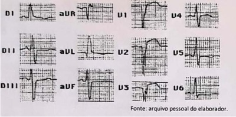
A ECG mostra infarto agudo no miocárdio, devendo-se tomar medidas para insuficiência coronária urgente.
B ECG com ritmo de fibrilação atrial e sobrecarga do VE, devendo o tratamento se basear em controle da frequência cardíaca e anticoagulação plena.
C ECG mosta supradesnivelamento do segmento ST sugestivo de pericardite, devendo- se solicitar Ecocardiograma e proceder ao tratamento com Indometacina e corticoides.
D ECG com zona inativa e supradesnivelamento do segmento ST sugestivo de aneurisma apical do V.E., devendo- se solicitar ecocardiograma para confirmação do possível etiologia tramboembólica e introduzir anticoagulação plena.
E ECG de hipertrofia ou dilatação do V.E devido à hipertensão arterial mal conduzida e passado de coronariopatia, devendo-se proceder ao tratamento com bom controle da pressão arterial e estatinas em dose plena.
Questão 57 · Diagnóstico eletrocardiograf ico da parede do inf arto · 4000010568Um paciente de 60 anos de idade é internado em razão de dor torácica típica de síndrome coronariana com duração de duas horas. Ele apresenta frequência cardíaca de 42 bpm, com bradicardia sinusal observada e confirmada no ECG, associada ao supradesnivelamento do segmento ST nas derivações DII, DIII e AVF. No que se refere a esse caso clínico, assinale a alternativa correta.
A O paciente provavelmente tem um aneurisma de ventrículo esquerdo como complicação do infarto agudo do miocárdio.
B O paciente apresenta quadro de infarto agudo do miocárdio de parede inferior, pois a artéria coronária direita irriga a parede inferior do ventrículo esquerda e o nó sinusal.
C A bradicardia sinusal apresentada pelo paciente é fator protetor do aumento da área de isquemia. Assim, não deve ser considerada como fenômeno patológico.
D O paciente apresenta infarto agudo do miocárdio de ventrículo direito, pois as derivações descritas são da artéria circunflexa e coronária direita.
E O ECG com supradesnivelamento do segmento ST, bem como o tempo de dor torácica, indicam que esse paciente não é candidato a terapia trombolítica ou angioplastia primária no momento.
Questão 58 · Inibidores da enzima conversora de angiotensina · Cardiologia · 4000009748Paciente de 58 anos, sexo feminino, portadora de hipertensão, dislipidemia e obesidade, evoluiu de forma súbita com quadro de dor torácica, em aperto, de forte intensidade, náuseas e sudorese. Atendida imediatamente ao chegar ao hospital de emergência, realizou eletrocardiograma e foi colhido o sangue para avaliação dos marcadores de necrose miocárdica. Cardiologista avaliou o resultado do eletrocardiograma e a paciente foi diagnosticada com infarto agudo do miocárdio com supradesnível de ST (IAMST). As primeiras medidas terapêuticas foram iniciadas e a reperfusão coronariana indicada. Uma das medidas terapêuticas na fase aguda do IAMST consiste em iniciar o inibidor da enzima conversora de angiotensina (IECA). Assinale a alternativa que apresenta uma contraindicação ao uso dos IECAS.
A Hemofilia.
B DPOC grave.
C Úlcera péptica em atividade.
D Estenose bilateral da artéria renal.
E Uso de inibidores da fosfodiesterase nas últimas 24 h.
Questão 59 · Diagnóstico eletrocardiograf ico da parede do inf arto · 4000007592Mulher de 60 anos, se apresenta na UPA com precordialgia em queimação de forte intensidade, de início súbito, que evolui posteriormente com tontura, náuseas e sudorese profusa. O ECG mostrou supradesnivelamento do segmento ST em D2, D3 e AVF e BAVT. Diante desse caso, a artéria mais provávelmente acometida é:
A Troco da coronária esquerda
B Artéria descendente anterior
C Artéria circunflexa
D Artéria coronária direita
Questão 60 · Fibrinólise no tratamento do IAMCSST · Seleção da estratégia de reperf usão miocárdica · 4000004933Homem, 50 anos de idade, chega ao pronto-socorro com dor torácica há duas horas. Eletrocardiograma inicial com supradesnivelamento de segmento ST em derivações V1- V6. O tempo necessário para transferir o paciente para o serviço de hemodinâmica mais próximo é de 130 minutos. Qual é a melhor conduta nesta situação?
A Administrar trombolítico e transferir o paciente se houver piora clínica.
B Administrar trombolítico e, em caso de sucesso, realizar cateterismo no sétimo dia pós IAM.
C Administrar trombolítico e transferir o paciente para realizar cateterismo entre 2-24 horas.
D Transferir o paciente imediatamente para realizar cateterismo.
E Administrar AAS e aguardar resultado de enzimas cardíacas.
Questão 61 · Complicações do IAMCSST · Cardiologia · 4000130153Homem, 52a, é admitido no pronto-socorro com história de dor no peito irradiada para ambos os membros superiores e falta de ar intensa há 4 horas. Antecedente pessoal: diabete melito e tabagismo 20 maços/ano. Exame físico: FR = 35 irpm, FC = 100 bpm, PA = 64 x 42 mmHg, sudoreico, cianose de extremidades. Pulmões: murmúrio vesicular presente simétrico, estertores crepitantes até ápice bilateralmente. Coração: bulhas hipofonéticas. ECG: Pode-se afirmar que:

A As pressões de enchimento ventricular estão elevadas, a pressão capilar pulmonar estáreduzida e o débito urinário está baixo.
B As pressões de enchimento ventricular estão baixas, a pressão capilar pulmonar estáalta e a resistência vascular sistêmica está alta.
C As pressões de enchimento ventricular estão elevadas, a pressão capilar pulmonar está alta e o débito urinário está baixo.
D O débito cardíaco e a resistência vascular sistêmica estão reduzidos.
Questão 62 · NItratos · 4000118892Paciente de 58 anos, feminino, professora aposentada, com história de IAM com supra ST há 2 anos que na época foi submetida a angioplastia primária de artéria descendente anterior. Desde então, sofre de dispneia aos esforços habituais, porém consegue desempenhar as atividades domésticas e caminhar 200 metros sem necessitar parar para descansar. Está em uso de AAS 100 mg/dia, atorvastatina 40 mg/dia, enalapril 10 mg 2x dia, carvedilol 25 mg 2x dia e e spironolactona 25 mg/dia. Ao ECG apresenta ritmo sinusal, com frequência cardíaca de 58 bpm em repouso e área inativa de parede anterior. Seu ecocardiograma demonstrou fração de ejeção de 38% e acinesia de parede anterior do ventrículo esquerdo. Há 2 dias, apresentou quadro de coriza, obstrução nasal, febre baixa (38º C) e piora da dispneia ao repouso. Seu ECG demonstrava ritmo regular com frequência cardíaca de 78 bpm e pressão arterial de 124/68 mmHg. Apresenta estertores crepitantes até 1/3 médios e ortopneia. Diurese sem alterações. Quanto ao manejo para o quadro apresentado, analise as assertivas a seguir, marcando CERTO para verdadeiro/correto e ERRADO para falso/incorreto. O uso de nitratos endovenosos são recomendados em pacientes com per l quente e úmido como o caso descrito da paciente.
A Certo.
B Errado.
Questão 63 · Inf arto de ventriculo direito · Cardiologia · 4000118010Homem, 62 anos, diabético tipo 2, hipertenso, dislipidêmico, tabagista, deu entrada no pronto-socorro referindo mal-estar epigástrico, mal definido, após alimentação copiosa. Apresenta-se pálido, sudoreico e referindo náuseas. Você inicia a monitorização, obtendo PA de 60 x 40 mmHg; FC de 80 bpm; SATO2 de 96%, ausculta pulmonar limpa. O ECG mostra o traçado abaixo. Qual a conduta CORRETA?
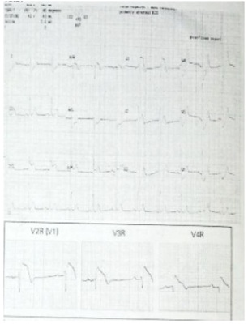
A Nitroglicerina, AAS, Clopidogrel, enoxaparina e volume.
B Dobutamina, nitroglicerina, AAS e cateterismo cardíaco.
C Morfina, oxigênio, nitrato endovenoso, dopamina, diuréticos. Considerar trombólise ou angioplastia primária.
D Expansão volêmica, noradrenalina, balão intra-aórtico se necessário. Considerar trombólise ou angioplastia primária.
Questão 64 · Intervenção coronariana percutânea precoce após a f ibrinólise estratégia f ármacoinvasiva · 4000117846Um paciente de 42 anos de idade deu entrada no serviço de emergência com dor no peito há 1h, realizando o ECG abaixo. Considerando esse caso hipotético, assinale a alternativa que apresenta a conduta CORRETA:
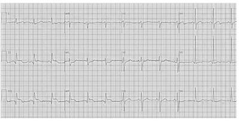
A Anti-inflamatório devido ao quadro sugestivo de pericardite.
B Trombólise devido ao quadro sugestivo de tromboembolismo pulmonar.
C Analgesia simples devido ao quadro sugestivo de repolarização precoce.
D Angioplastia primária após AAS 300 mg e clopidogrel 300 mg.
E Angioplastia primária após AAS 300 mg e clopidogrel 600 mg.
Questão 65 · Aneurisma de ventrículo esquerdo · 4000109878Paciente admitido no pronto socorro com quadro clínico de insu ciência cardíaca. Tem antecedente de infarto agudo do miocárdio há cinco meses. O eletrocardiograma à admissão exibe elevação do segmento ST em parede anterior com presença de ondas Q. As dosagens seriadas da CKMB e troponina foram normais. O diagnóstico mais provável é:
A Comunicação interventricular tardia pós-IAM
B Ruptura de músculo papilar
C Ruptura de parede livre do ventrículo esquerdo
D Aneurisma de ventrículo esquerdo
Questão 66 · Inf arto Agudo do miocárdio com supra de ST IAMCSST · 4000098706Mulher, 56a, tabagista e diabética refere dor precordial irradiada para o membro superior esquerdo e náuseas há três horas. Eletrocardiograma. A localização do infarto agudo do miocárdio é na parede:
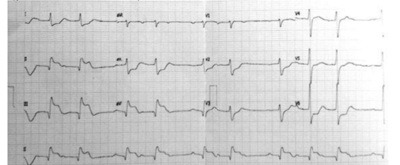
A Inferoposterior.
B Inferolateral.
C Inferoanterior.
D Anterior.
Questão 67 · Intervenção coronariana percutânea primária · Antiagregantes plaquetários · 4000085583Homem 56 anos, diabético e tabagista, chega à emergência de um hospital terciário de grande porte com queixa de dor precordial irradiada para o membro superior esquerdo, acompanhada de náuseas e sudorese, iniciada há quatro horas. Na chegada, foi submetido a um ECG que revelou supradesnível do segmento ST na parede anterior. Foi coletado exame de sangue, incluindo a medida da troponina I. Qual é a conduta correta?
A Administrar AAS 300 mg VO e clopidogrel 300 mg VO e encaminhar para monitorização em unidade de terapia cardiovascular.
B Aguardar o resultado da troponina I para definição do manejo posterior.
C Administrar imediatamente fibrinolítico endovenoso.
D Administrar AAS 300 mg VO, ticagrelor 180 mg VO e encaminhar imediatamente para a realização de cinecoronariografia.
E Se o resultado da primeira medida de troponina I estiver normal, repetir o exame em 3 horas para estabelecer a estratégia diagnóstica adicional e o plano terapêutico.
Questão 68 · NItratos · Acido acetilsalicílico · Antiagregantes plaquetários · 4000081256Homem, 52 anos, é levado a atendimento por náuseas, sudorese, dispneia e pressão torácica subesternal intensa, com irradiação para a mandíbula, sem alívio na última hora. O paciente descreve aumento da severidade da dor nos últimos dois meses, com alívio parcial no repouso até o momento atual. Familiar informa que o paciente é tabagista, hipertenso e dislipidêmico. Consome 2 a 3 maços de cigarro/dia. No exame físico, o paciente encontra-se hipertenso, taquicárdico e com estertores pulmonares. Eletrocardiograma de repouso com presença de onda Q e supradesnível de segmento ST. Considerando a hipótese diagnóstica mais provável, qual a conduta inicial?
A Uso de ácido acetilsalicílico, dinitrato de isossorbida sublingual e opioide (morfina).
B Uso de opioide (morfina) e furosemida.
C Uso de estatinas em doses elevadas e anticoagulante.
D Uso de dinitrato de isossorbida sublingual, bloqueador de canal de cálcio e diurético tiazídico.
E Uso de ácido acetilsalicílico, estatinas em doses elevadas e furosemida.
Questão 69 · Intervenção coronariana percutânea primária · Antiagregantes plaquetários · 4000077908Homem 68 anos, hipertenso, diabético, dislipidêmico, é admitido no serviço de emergência com queixa de dor precordial referida de forte intensidade, iniciada há duas horas, com irradiação para região escapular ipsilateral, associada com náuseas, vômitos e sudorese fria. Relata tabagismo e etilismo social. Paciente com histórico de TCE (traumatismo cranioencefalico) recente em virtude de queda da escada, após episódio de sincope súbita Desde então apresenta episódios esporádicos de confusão mental. Exame físico: orientado, com palidez cutâneo mucosa, acianótico e com dispneia leve. PA = 80/40 mmHg e FC = 70 bpm, Saturação de Oxigênio 88%. Ausculta cardíaca com RCR em 2T, sem sopros. Ausculta pulmonar normal. O ECG apresentava o padrão eletrocardiográfico abaixo: Além da administração de oxigênio inalatório e AAS, está indicado:
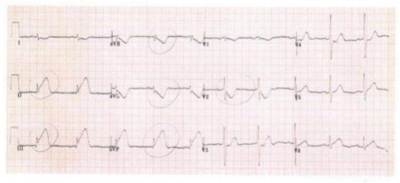
A Oferecer nitrato sublingual e realizar ECG avaliando V3R e V4R.
B Betabloqueador e heparinização plena.
C Clopidogrel e angioplastia coronariana percutânea primária.
D Ticagrelor e trombolitico.
Questão 70 · Inf arto Agudo do miocárdio com supra de ST IAMCSST · 4000070626Homem, 57 anos, portador de hipertensão arterial e dislipidemia, dá entrada na sala de emergência com queixa de dor epigástrica de forte intensidade com irradiação retroesternal, iniciada há 18 minutos. Ao exame: lúcido e orientado, sudorese difusa, ritmo cardíaco regular em 2T com bulhas hipofonéticas sem sopros; PA 180 x 110 mmHg; FC 80 bpm; Realizado eletrocardiograma – ECG (abaixo). Qual é o diagnóstico?
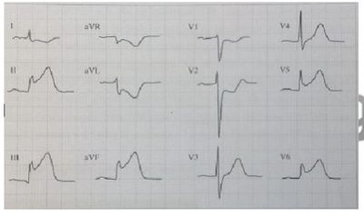
A Pericardite Aguda.
B Dissecção Aguda de Aorta.
C Tamponamento Pericárdico.
D Infarto Agudo do Miocárdico.
Questão 71 · Fibrinólise no tratamento do IAMCSST · Intervenção coronariana percutânea no tratamento do IAMCSST · 4000069046Qual alternativa correta em relação ao tratamento do infarto agudo do miocárdio?
A O uso de fibrinolítico para o tratamento do infarto agudo do miocárdio com supra desnivelamento do segmento ST está indicado em hospitais com recurso para realização imediata de intervenção coronária percutânea (dentro de 90 minutos).
B O fibrinolítico esteptoquinase (SK) é preferível à alteplase (tPA) para a reperfusão miocárdica no infarto agudo com supradesnivelamento do segmento ST.
C O uso dos antiplaquetários inibidores do receptor P2Y12 (clopidogrel, ticagrelor ou prasugrel) em associação ao AAS está consagrado como terapia eficaz no infarto agudo do miocárdio tratado com fibrinolítico.
D Aintervenção coronária percutânea (ICP) primária é a utilização de cateter balão, com ou sem implante do stent coronário, sem o uso prévio de fibrinolítico, com o objetivo de restabelecer o fluxo ccronário anterogrado da artéria relacionada ao infarto agudo do miocárdio de maneira mecânica.
E Pacieentes com choque cardiogênico relacionado a infarto agudo do miocárdio com supradesnivelamento do segmento ST devem ser submetidos preferencialmente a tentativa de reperfusão miocárdica com fibrinolíticos devido à instabilidade hemodinâmica.
Questão 72 · Diagnóstico eletrocardiograf ico da parede do inf arto · 4000065912Homem, 56 anos, cor branca, é internado com precordialgia em aperto, com 2 horas de duração. Sua frequência cardíaca é de 42 batimentos por minuto, com bradicardia sinusal no ECG e supradesnivelamento de ST nas derivações II, III e aVF. Qual dos seguintes diagnósticos é o mais provável?
A Aumento de tônus vagal
B IAM de parede inferior
C Aneurisma do ventrículo esquerdo
D Hipotireoidismo
Questão 73 · Diagnóstico eletrocardiograf ico da parede do inf arto · Cardiologia · 4000054635Paciente feminina, 68 anos, diabética, refere angústia, opressão em região cervical e fraqueza em MMII há 2 horas. A admissão, apresenta-se lúcida, hipertensa (PA 150/80 mmHg), taquicárdica, com pulsação visível no precordio. Rx de tórax sem alteração. Pulsos simétricos e normais. O ECG ACIMA foi efetuando à admissão.
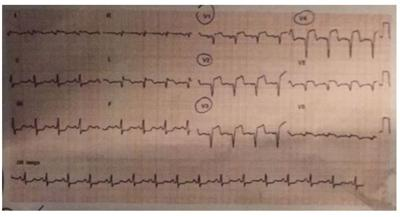
A Trata-se de paciente com quadro de taquicardia supraventricular com condução aberrante, estável, devendo receber adenosina Intravenosa.
B Trata-se de paciente com infarto agudo do miocárdio em evolução, de localização infero-lateral, com indicação para trombólise.
C Trata-se de paciente com quadro de taquicardia supraventricular com condução aberrante, instável, devendo ser cardiovertida.
D Trata-se de paciente com infarto agudo do miocárdio em evolução, de localização antero-lateral, extenso, com indicação para trombólise.
E Trata-se de paciente com dissecção de aorta Tipo II, devendo ser submetida à angiotomografia e intervenção endovascular.
Questão 74 · Diagnóstico eletrocardiograf ico da parede do inf arto · 4000048785Homem de 44 anos apresenta dor precordial súbita, irradiando para mandíbula, associado a náuseas e sudorese. ECG mostrou supradesnivelamento de V1-V4. Qual a artéria acometida?
A Descendente anterior.
B Coronária circunflexa.
C Coronária esquerda.
D Descendente posterior.
Questão 75 · Tratamento f armacológico do IAMCSST · Intervenção coronariana percutânea primária · 4000043644Um paciente de 58 anos, diabético e hipertenso procurou a emergência com queixas de desconforto retroesternal em aperto há doze horas. Seu exame físico era normal, exceto por leve sudorese, com PA = 140 x 80 mmHg. ECG de admissão mostrou supradesnivelamento do segmento ST em V2 a V4. Os resultados de troponina ainda não estão disponíveis, pois ocorreu um problema técnico no laboratório. Assim que chegou, foi tratado com aspirina e nitrato sublingual, com melhora da queixa álgica. Qual a conduta neste momento?
A Enquanto aguarda o resultado da troponina, iniciar betabloqueador, heparina e estatina.
B Medicar com betabloqueador, estatina e heparina e acionar o grupo de hemodinâmica de plantão para realizar angioplastia percutânea de urgência.
C Indicar uso de trombolítico imediatamente e, após 24 horas, iniciar heparina.
D Como a pressão está controlada, iniciar apenas heparina e estatina, enquanto aguarda os resultados laboratoriais.
E Solicitar ecocardiograma para avaliar a hipótese diagnóstica de pericardite.
Questão 76 · Eletrocardiograma · Diagnóstico eletrocardiograf ico do IAMCSST · 4000038222Paciente, 60 anos, sexo masculino, hipertenso há 20 anos, tabagista 30 anos/maço e diabético insulinodependente. Foi admitido no pronto-socorro com queixa de dor precordial de intensidade 7/10, iniciada em repouso há 1 hora, com irradiação para ambos os membros superiores e dorso, associado a náuseas e vômitos. Ao admitir o paciente na sala de emergência, a propedêutica mais adequada a ser seguida é:
A Solicitar mioglobina, creatinofosfoquinase, creatinoquinase MB massa e troponina por apresentarem alta especificidade e valor preditivo positivo em casos de infarto agudo do miocárdio, nas primeiras 2 horas dos sintomas.
B Realizar eletrocardiograma nos primeiros 10 minutos após a admissão do paciente e repetir sempre que necessário ou se houver mudança dos sintomas (melhora ou piora).
C A presença de supradesnivelamento do segmento ST "maior ou igual a" 2 mm em derivação AVR sugere infarto de ventrículo direito, sendo o próximo passo a realização de radiografia de tórax para avaliar congestão pulmonar.
D A presença de supradesnivelamento do segmento ST "maior ou igual a" 2 mm em derivações D2, D3 e AVF sugere infarto de parede inferior. A complementação eletrocardiográfica com derivações V3R, V4R, V5 e V6 deverá ser realizada objetivando diagnosticar infarto de ventrículo direito e de parede posterior.
Questão 77 · Intervenção coronariana percutânea no tratamento do IAMCSST · 4000036156Os Stents Farmacológicos (SF) desenvolvidos no nal dos anos 1990 resultam da combinação de uma plataforma metálica com um fármaco antiproliferativo, em geral carreado ao sitio da lesão por meio de um polímero, que controla a cinética de liberação do agente antiproliferativo. Em relação a isso, assinale a alternativa INCORRETA:
A O uso dos SFs de primeira geração não afetou a ocorrência de óbito e IAM, associando-se, porém ao aumento da ocorrência de trombose bastante tardia (após o primeiro ano do implante).
B Atualmente, a primeia geração dos SFs não é mais utilizada na prática clínica, tendo sido amplamente substituida pelas novas gerações desses dispositivos, caracterizadas pela utilização de plataformas mais finas. Com respeito ao fármaco antiproliferativo, a quase totalidade desses novos dispositivos utiliza sirolimus ou seus nálogos/derivados.
C SFs de nova geração, com polímeros duráveis e bioabsorvíveis, que têm seu uso aprovado no Brasil, com base nos resultados de ensaios randomizados com desfechos clinicos ou angiográficos. Cabe lembrar que esses quadros são dinâmicos, estando a aprovação de novos dispositivos sujeita à analise da Agência Nacional de Vigilância Sanitária (ANVISA).
D O uso dos SFs de primeira geração afetou a ocorrência de óbito e IAM, associando-se, porém ao aumento da ocorrência de trombose bastante tardia (após o primeiro ano do implante).
Questão 78 · Insuf iciência mitral aguda · 4000024845Um homem de 65 anos de idade, portador de diabetes e de hipertensão arterial apresenta quadro doloroso precordial iniciado há 2 dias , quando foi internado em unidade hospitalar em cidade remota , de modo a aguardar transferência para uma unidade de referência em cardiologia. O resultado do eletrocardiograma apresenta supra de ST e onda Q, embora o paciente se apresente hemodinamicamente estável. Ele chega a uma unidade terciária para vaga em UTI. Durante o transporte, houve piora súbita do estádo clínico do paciente , que apresentou dispneia, diaforese e edema agudo de pulmão. Na admissão na UTI, o paciente apresentava PA de 98 mmHg x 72 mmHg (PA média de 81 mmHg), sopro meso- sistólico leve, mas audível, em ápice, irradiando-se para axila. além de edema agudo de pulmão. Considerando-se o referido caso clínico e os conhecimentos médicos relacionados a ele, é correto a rmar que, ao admitir o paciente, a equipe deverá realizar
A estabilização do quadro respiratório, com suporte ventilatório e ecocardiograma precoce, para planejamento de plastia ou troca mitral.
B estudo hemodinârnico para reperfusão de resgate e iniciar imediatamente terapia com dupla antigregação plaquetária.
C o procedimento do balão intra-aórtico, em razão de tratar-se de sopro secundário à degeneração ventricular esquerda, com reperfusão programada.
D intubação orotraquel e investigação de evento tromboembólico pulmonar para início da administração trombolítico.
E infusão de agentes inotrópicos e vasopressores por se tratar de insuficiência ventricular esquerda decorrente de infarto agudo do miocárdio.
Questão 79 · Intervenção coronariana percutânea no tratamento do IAMCSST · 4000023988Na avaliação de um paciente com infarto agudo do miocárdio com supra de ST, cujos sintomas iniciaram há 18 horas, a coronariografia deve ser realizada
A em caráter de urgência, para a realização de angioplastia primária.
B na presença de isquemia refratária às medidas farmacológicas.
C apenas quando houver falência da terapia com fibrinolíticos.
D apenas nos pacientes de risco moderado a alto pelo escore TIMI.
Questão 80 · Aneurisma de ventrículo esquerdo · 4000021230As complicações relacionadas com a doença coronária e, especi camente, com o Infarto Agudo do Miocárdio (IAM) são diversas e frequentes. É uma complicação mecânica do IAM:
A Trombose coronariana.
B Dissecção coronariana.
C Aneurisma de ventrículo esquerdo.
D Bloqueio Atrioventricular Total (BAVT).
Questão 81 · Fibrinólise no tratamento do IAMCSST · 4000019647Diversos estudos utilizaram brinolíticos fora do ambiente hospitalar com condições operacionais apropriadas para seu uso, e para a monitorização tanto clínicas como eletrocardiográ ca pré-hospitalar dos pacientes e para o tratamento das taquiarritmias. Esses estudos consolidaram alguns conceitos, dos apresentados nas alternativas a seguir, assinale o INCORRETO.
A A utilização da terapêutica fibrinolítica pré hospitalar baseia-se no conceito clássico experimental de que, ao se abreviar o tempo de isquemia miocárdica aguda, reduz-se o tamanho do infarto do miocárdio.
B Quanto mais precoce é administrada a terapêutica fibrinolítica, menores a mortalidade e o grau de disfunção ventricular.
C O retardo pré-hospitalar, intervalo entre o início dos sintomas isquêmicos e a chegada ao hospital, não é um dos determinantes do tamanho do infarto e da mortalidade pré e intra-hospitalar.
D O retardo pré-hospitalar, esse tempo é de, em média, 3 a 4 horas. A utilização pré- hospitalar da terapêutica fibrinolítica visa reduzir esse retardo.
Revisar: possível letra faltando em enunciado
Questão 82 · Identif icando o local do inf arto · Diagnóstico eletrocardiograf ico do IAMCSST · 4000014017Um paciente de quarenta e oito anos de idade, sem doenças prévias, procurou atendimento de emergência em um hospital de nível terciário, com quadro de dor retroesternal, de grande intensidade, em aperto, com irradiação para o membro superior esquerdo (tipo formigamento), iniciada havia quatro horas. Com exceção da presença de quarta bulha cardíaca, não apresentou outras alterações significativas no exame físico. O eletrocardiograma realizado na sala de emergência evidenciou ritmo sinusal, frequência ventricular média de 98 bpm, SÂQRS de + 60°, presença de supradesnivelo do segmento ST de 5 mm na derivações precordiais de V1 a V6 e nas derivações do plano frontal D1 e aVL. Os níveis de troponina T e de CKBM estavam elevados e com valores acima do triplo do limite superior de referência. Com base nas informações clínicas e laboratoriais do caso clínico precedente, julgue o item subsequente. O provável diagnóstico para esse paciente é de infarto do miocárdio transmural - com supra do segmento ST do eletrocardiograma -, localizado na parede anterior extensa.
A Certo.
B Errado.
Questão 83 · Fibrinólise no tratamento do IAMCSST · 4000014013Intervenção coronariana percutânea no tratamento do IAMCSST Um paciente de quarenta e oito anos de idade, sem doenças prévias, procurou atendimento de emergência em um hospital de nível terciário, com quadro de dor retroesternal, de grande intensidade, em aperto, com irradiação para o membro superior esquerdo (tipo formigamento), iniciada havia quatro horas. Com exceção da presença de quarta bulha cardíaca, não apresentou outras alterações significativas no exame físico. O eletrocardiograma realizado na sala de emergência evidenciou ritmo sinusal, frequência ventricular média de 98 bpm, SÂQRS de + 60°, presença de supradesnivelo do segmento ST de 5 mm na derivações precordiais de V1 a V6 e nas derivações do plano frontal D1 e aVL. Os níveis de troponina T e de CKBM estavam elevados e com valores acima do triplo do limite superior de referência. Com base nas informações clínicas e laboratoriais do caso clínico precedente, julgue o item subsequente. O paciente deve ser submetido a uma estratégia de recanalização coronariana com intervenção coronariana percutânea primária - via cateterismo cardíaco - ou por meio de brinólise intravenosa, devendo o médico optar pela que tiver possibilidade de início mais rápido.
A Certo.
B Errado.
Questão 84 · Antiagregantes plaquetários · Cardiologia · 4000013645Avaliação do ECG em situações especiais bloqueio de ramo esquerdo e marcapasso Homem, 60 anos, hipertenso de longa data em uso irregular de medicação, chega ao pronto-socorro com dor retroesternal com irradiação para dorso e cervical, de intensidade 10 em 10, iniciada há duas horas, associada a sudorese e palidez mucocutânea, sudoreico e hipocorado, com pressão arterial de 220/120mmHg e eletrocardiograma a abaixo: Qual a conduta imediata?
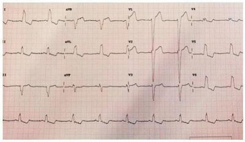
A Prescrever ácido acetilssalicílico e clopidogrel.
B Solicitar cineangiocoronariografia de urgência.
C Solicitar tomografia computadorizada de aorta de urgência.
D Prescrever nitroprussiato de sódio.
E Instalar marcapasso transvenoso e controlar pressão arterial.
Questão 85 · Diagnóstico do IAMCSST · Terapias de reperf usão miocárdica · Cirurgia · 4000009769Paciente do sexo feminino, 62 anos, com antecedente de hipertensão arterial com tratamento irregular, dá entrada em sala de pronto atendimento com história de dor torácica há 2 horas. O ECG de entrada é: Assinale a alternativa que fornece corretamente o diagnóstico e a conduta.
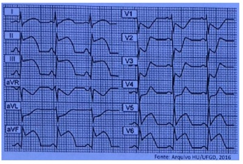
A Síndrome coronariana aguda com supra do segmento ST inferolaterodorsal. Trombólise química ou angioplastia primária.
B Síndrome coronariana aguda com supra do segmento ST inferolaterodorsal: solicitar enzimas cardíacas e CT tórax para descartar dissecção de aorta.
C Pericardite Aguda. Supradifuso do segmento ST: solicitar ecocardiograma e introduzir Ibuprofeno.
D Tromboembolismo pulmonar. S1Q3T3: solicitar CT de tórax e ecocardiograma para avaliar função do VD. Trombólise caso VD com disfunção sistólica.
E Dissecção de aorta: solicitar CT de tórax com urgência.
Questão 86 · Intervenção coronariana percutânea primária · 4000005055Para qual das situações abaixo indica-se a trombólise química ou percutânea?
A Supradesnivelamento do segmento ST > 1 mm em pelo menos duas derivações precordiais contíguas ou duas periféricas adjacentes, e dor sugestiva de isquemia coronária de duração > 20 minutos e < 12 horas não responsiva a nitrato sublingual.
B Elevação de troponina sem alteração de eletrocardiograma em pacientes com dispneia súbita.
C Dor desencadeada com o esforço físico, que melhora com o repouso e infradesnivelamento do segmento ST > 1 mm em pelo menos duas derivações precordiais contíguas ou duas periféricas adjacentes.
D Paciente classificado como Killip II com ecocardiograma transtorácico demonstrando acinesia da parede anterior.
E Pacientes sem dor precordial, hipotensos e eletrocardiograma demonstrando bloqueio atrioventricular total.
Questão 87 · Inf arto de ventriculo direito · Diagnóstico eletrocardiograf ico do IAMCSST · 4000002161Paciente de 65 anos, tabagista, sedentário e obeso, chega no pronto-socorro 28 de agosto com dor precordial típica. Seu ECG na admissão revelou supradesnivelamento do seg ST de 0,3 mV em V4R, V5R e V6R. Neste cenário, qual o diagnóstico e tratamento imediato? Escolha dentre as opções abaixo:
A Infarto de ventrículo direito e o tratamento deve ser feito com expansão de volume.
B Infarto de ventrículo direito e o tratamento deve ser feito com nitrato endovenoso.
C Infarto de parede anterior localizada e tratamento com betabloqueadores endovenosos.
D Infarto de parede anterosseptal e tratamento com betabloqueadores endovenosos.
Questão 88 · Intervenção coronariana percutânea de resgate · Cardiologia · 4000126288A angioplastia dentro de 12 horas, após insucesso de brinólise para pacientes com isquemia recorrente no infarto agudo do miocárdio, é chamada:
A Intervenção percutânea coronária de resgate.
B Intervenção percutânea coronária de salvamento.
C Intervenção percutânea coronária secundária.
D Intervenção percutânea coronária terciária.
E Nenhuma das respostas acima.
Questão 89 · Tratamento f armacológico do IAMCSST · 4000107137Em relação às condutas iniciais em paciente com infarto agudo do miocárdio com supradesnivelamento do segmento ST, assinale a alternativa incorreta:
A Clopidogrel em associação ao ácido acetilsalicílico
B Oxigenoterapia para pacientes com congestão pulmonar e/ou saturação de oxigênioabaixo de 94%
C Betabloqueador intravenoso de rotina
D Analgesia com morfina
Questão 90 · Intervenção coronariana percutânea primária · 4000057772Intervenção coronariana percutânea precoce após a f ibrinólise estratégia f ármacoinvasiva Paciente com cirurgia de revascularização do miocárdio prévia refere dor precordial, com 2 horas de evolução e apresenta supradesnivelamento de segmento S-T em parede diafragmática e marcadores cardíacos alterados. Nesse caso, qual é a conduta IMEDIATA?
A Encaminhamento para estudo hemodinâmico.
B Administração de fibrinolítico em Unidade Coronariana.
C Avaliação de fatores de risco e acompanhamento com marcadores cardíacos.
D Encaminhamento para cirurgia cardíaca.
Questão 91 · Acido acetilsalicílico · 4000056794Mulher de 54 anos de idade, hipertensa, fumante e com histórico de uso de anticoncepcional oral, procura atendimento médico com dor no ombro esquerdo, dispneia e diaforese. Realizado avaliação física encontra sudorese fria, dispneia, taquipneia e estertores crepitantes bi-basais. ECG demonstra supra de ST em V1, V2 e V3. Dessa forma, o tratamento ADEQUADO deve ser feito com:
A Atenolol oral.
B Metoprolol venoso.
C Aspirina.
D Trombolítico seguido de angioplastia (facilitada).
Questão 92 · Betabloqueadores · Choque cardiogênico · Insuf iciência cardíaca aguda · 4000056788Mulher de 40 anos de idade, hipertensa, fumante e com histórico de uso de anticoncepcional oral, procura atendimento médico com dor no ombro esquerdo, dispneia e diaforese. Realizado avaliação física encontra sudorese fria e pegajosa, dispneia, taquipneia e estertores crepitantes bi basais. ECG demonstra supra de ST em V1, V2, V3 e V4. Dessa forma, assinale a alternativa CORRETA.
A Indicar angioplastia facilitada.
B Contraindicar beta bloqueador.
C Contraindicar oxigênio suplementar.
D Contraindicar analgésico com opioide.
Questão 93 · Diagnóstico eletrocardiograf ico da parede do inf arto · 4000052098Observe o eletrocardiograma a seguir: (VER IMAGEM) Em relação a esse eletrocardiograma, é CORRETO a rmar que corresponde a um paciente com infarto agudo do miocárdio com supradesnivelamento do segmento ST de parede:
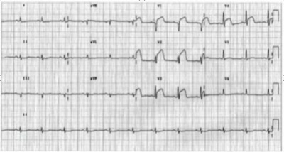
A Anterior; artéria acometida descendente anterior.
B Posteroinferior; artéria acometida diagonal.
C Laterobasal; artéria acometida circunflexa.
D Lateral; artéria acometida circunflexa.
E Inferior; artéria acometida coronária direita.
Questão 94 · Cirurgia de revascularização miocárdica no tratamento do IAMCSST · 4000047791Tratamento f armacológico do IAMCSST Diante de um paciente de 68 anos, portador de hipertensão, diabetes e dislipidemia, que se apresenta em um serviço de emergência com queixa de dor torácica, com 1 hora de evolução, e que o eletrocardiograma revela elevação do segmento ST de 4 mm nas derivações de V1 a V4, a conduta mais adequada, considerando um serviço sem hemodinâmica disponível, é:
A Administrar dupla antiagregação plaquetária com AAS e clopidogrel, aplicar enoxaparina, prescrever betabloqueador caso não haja contraindicação. Solicitar marcadores de necrose miocárdica com 0, 3 e 9 horas do início da dor, e, caso positivo, encaminhar para realização de angioplastia primária.
B Administrar dupla antiagregação plaquetária com AAS e clopidogrel, aplicar enoxaparina, prescrever betabloqueador caso não haja contraindicação. Solicitar marcadores de necrose miocárdica com 0 e 6 horas do início da dor, e, caso positivo, encaminhar para realização de angioplastia primária.
C Administrar dupla antiagregação plaquetária com AAS e clopidogrel, aplicar enoxaparina, prescrever betabloqueador caso não haja contraindicação. Solicitar encaminhamento para serviço de hemodinâmica para angioplastia primária em até 12 horas do início da dor. Caso não seja possível encaminhar para serviço de hemodinâmica, prescrever inibidor de glicoproteína 2b-3a em até 15 minutos.
D Administrar dupla antiagregação plaquetária com AAS e clopidogrel, aplicar enoxaparina, prescrever betabloqueador caso apresente-se taquicárdico e infundir trombolítico. Solicitar encaminhamento para serviço de hemodinâmica para angioplastia primária em até 60 minutos. Caso não seja possível encaminhar para serviço de hemodinâmica, prescrever inibidor de glicoproteína 2b-3a em até 10 minutos.
E Administrar dupla antiagregação plaquetária com AAS e clopidogrel, aplicar enoxaparina, prescrever betabloqueador caso não haja contraindicação. Solicitar encaminhamento para serviço de hemodinâmica para angioplastia primária em até 90 minutos, podendo ser acrescentado mais 30 minutos para o transporte do paciente. Caso não seja possível obter a angioplastia em tempo adequado, iniciar trombolítico em até 30 minutos.
Questão 95 · Inf arto agudo do miocárdio associado ao uso de drogas ilícitas · Cardiologia · 4000044179Um paciente de 32 anos foi trazido para emergência, com queixas de dor torácica após uso de cocaína. Ele estava agitado, com PA = 160 x 90 mmHg, FC 120 bpm e FR 21 irpm. Foi realizado eletrocardiograma que evidenciou taquicardia sinusal com inversão de ondas T e infradesnivelamento do segmento ST em V4, V5 e V6. Qual das condultas abaixo NÃO deverá ser utilizada nesse caso?
A Diltiazem.
B Benzodiazepínico.
C Nitroglicerina.
D Metoprolol.
E Aspirina.
Questão 96 · Inf arto de ventriculo direito · 4000032036Homem de 66 anos, admitido com infarto agudo do miocárdio acometendo parede inferior do ventrículo esquerdo com seis horas de evolução, apresenta-se com níveis pressóricos reduzidos, sinais de pressão venosa aumentada e pulmões limpos à ausculta. Qual afecção abaixo explica MELHOR este quadro clínico?
A Edema agudo de pulmão.
B Falência ventricular esquerda.
C Infarto agudo do ventrículo direito.
D Síndrome pós-infarto do miocárdio.
Questão 97 · Intervenção coronariana percutânea no tratamento do IAMCSST · 4000030720Paciente apresenta dor precordial em repouso de início há 40 minutos. Apresenta o ECG a seguir: (Conforme imagem). Qual a conduta mais importante?
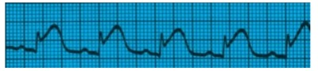
A Heparinização plena.
B Cineangiocoronariografia e angioplastia primária.
C Analgesia com morfina.
D Controle pressórico.
Questão 98 · Diagnóstico eletrocardiograf ico do IAMCSST · 4000019717Homem de 65 anos dá entrada no pronto-socorro com forte dor no peito iniciada há uma hora, e associada a sudorese e náuseas. Ao exame físico, observam-se fácies de dor, ritmo cardíaco regular, PA = 140x90 mmHg, frequência cardíaca de 90 BPM e Sat. O₂ = 95%. O ECG exibe supradesnivelamento do segmento ST de V1 a V4. No caso desse paciente, considera-se inapropriada, na admissão, a seguinte conduta:
A Administração de aspirina.
B Administração de betabloqueador.
C Solicitação de enzimas cardíacas.
D Encaminhamento para o cateterismo cardíaco.
Questão 99 · Intervenção coronariana percutânea primária · 4000008440Homem de 65 anos, com dor precordial que irradia para mandíbula, associada a náuseas e diaforese, de início há 30 minutos. Filho refere que o paciente já apresentara dor de caráter semelhante há 2 semanas. É portador de hipertensão arterial sistêmica, diabetes mellitus e dislipidemia, tomando medicações prescritas de forma irregular. Realizou o seguinte eletrocardiograma na entrada: (VER IMAGEM) Evoluiu com sinais de hipotensão, congestão pulmonar e má perfusão periférica. Qual a conduta a ser realizada no momento, além do controle hemodinâmico, uso de dupla antiagregação plaquetária e anticoagulante parenteral? Respostas: 1 12 23 34 45 56 67 78 89
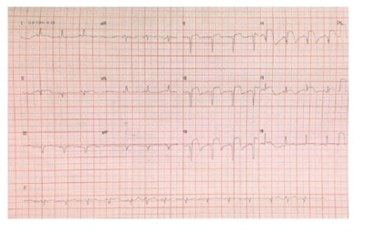
A Trombolítico.
B Intervenção coronária percutânea.
C Cirurgia de revascularização do miocárdio.
D Tratamento clínico e teste provocativo de isquemia